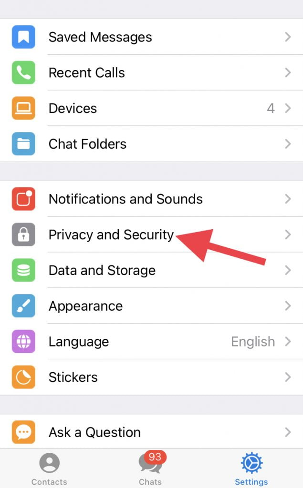
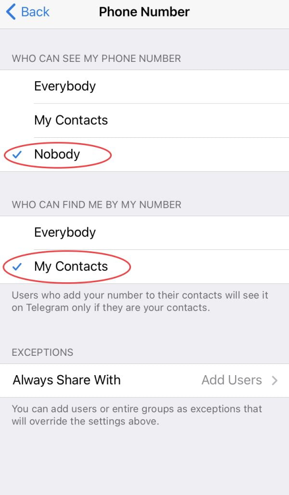
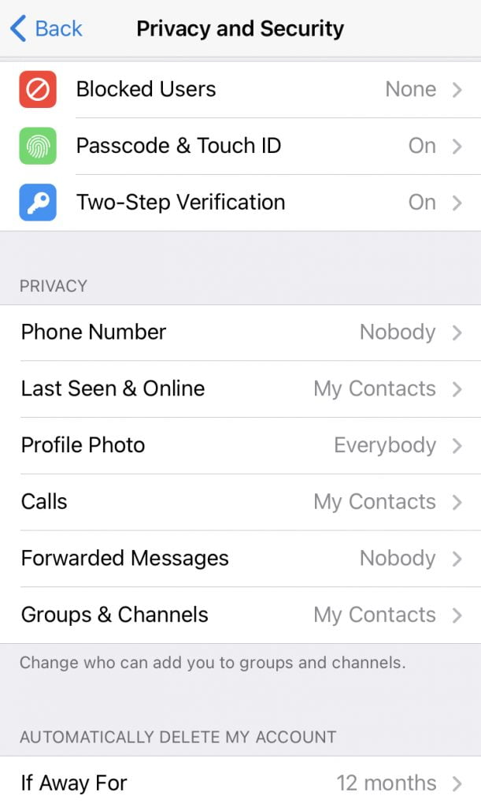
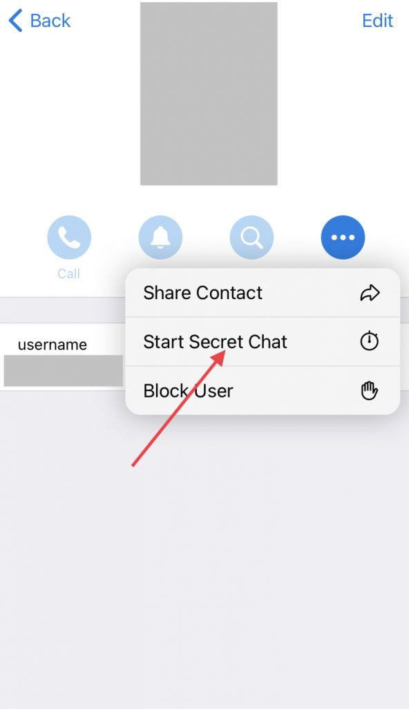
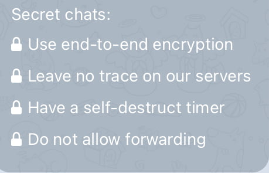

My Recommended Telegram Privacy Settings
ပထမဆုံး Telegram ကို ဖွင့်လိုက်ပါ။ ပြီးရင် Setting ကိုရွေးပါ။ ပြီး Privacy and Security ကို ဆက်ရွေးရပါမယ်။ ဒီအထဲက settings တွေကို ပြောင်းပေးရမှာဖြစ်ပါတယ်။
Two-Step verification: ဒီ setting ကိုလဲ ON ပြောင်းလိုက်ပါ။ ပြီးရင် Password အသစ်ရိုက်ထည့်ပါ။ မေ့သွားရင် အသုံးပြုဖို့လဲ Password hint နဲ့ recovery email ထည့်ပေးထားပါ။ ဒီ Password က နောက် ဖုန်းအသစ်တစ်လုံးမှာ log in လုပ်မယ်ဆို SMS ကနေ ပို့တဲ့ Login code အပြင် ဒီ password ကိုပါ ရိုက်ထည့်ရမှာ ဖြစ်ပါတယ်။ ဒီနည်းအားဖြင့် ကိုယ့် ဖုန်းနံပါတ်ကို အတုလုပ် ပွားပြီး ကိုယ့် telegram အကောင့်ထဲ ဝင်ဖို့ ခက်သွားမှာ ဖြစ်ပါတယ်။
Phone Number: မိမိရဲ့ ဖုန်းနံပါတ်ကို မပေါ်အောင် ဖျောက်ထားဖို့လဲ လိုအပ်ပါတယ်။
- “Who can see my phone number” ဆိုတဲ့ Setting ကို Nobody သို့ My Contacts အတွက်ပဲ ပြောင်းလိုက်ပါ။ ကျွန်တော်ကတော့ ကျွန်တော့ ဖုန်းနံပတ်ကို လုံးဝ ဖျောက်ထားချင်တာမို့ Nobody ကို ရွေးပါတယ်။
- “Who can find me by my number” ကို My Contacts ကို ပြောင်းလိုက်ပါ။ ဒီနည်းအားဖြင့် ကိုယ့်ရဲ့ Telegram contact list ထဲ ပါတဲ့သူပဲ ကိုယ့်ကို ဖုန်းနံပါတ်ရိုက်ထည့်ပြီး ရှာလို့ ရပါတော့မယ်။ ကိုယ်မသိတဲ့ သူက ကိုယ့်ဖုန်းနံပါတ် ရိုက်ထည့်လို့ ကိုယ့်အကောင့်ကို ရှာမတွေ့နိုင် တော့ပါဘူး။

Calls: ဒီ setting ကို ကျွန်တော်ကတော့ My Contacts ကို ပြောင်းထားပါတယ်။ ကိုယ့် စာရင်းထဲက သူတွေပဲ ခေါ်လို့ရအောင်ပါ။ တွေ့ကရာသူ ဆက်သွယ်လာတာ မလိုလားလို့ ဖြစ်ပါတယ်။
Forwarded Messages: ဒီ Setting “Who can add a link to my account when forwarding my messages” ကို Nobody ပြောင်းထားပါတယ်။ ဒီနည်းအားဖြင့် ကိုယ်ပို့ထားတဲ့ message တွေကို တခြားသူတွေက ထပ်ဆင့် forward လုပ်တဲ့အခါ ကိုယ့်အကောင့်က ထွက်တယ်ဆိုတာ လူမသိနိုင်အောင် ဖြစ်ပါတယ်။

ပိုကောင်းတဲ့ privacy အတွက် secret chat
Signal ပေါ်မှာ ဆိုရင်တော့ ပို့တဲ့ message တွေက ပို့သူနဲ့ လက်ခံသူကြားမှာ ဝှက်စာသွင်းထားတာမို့ (end-to-end encryption) ကြားက ဘယ်သူမှ ဖောက်ဖတ်လို့ မရပါဘူး။ Telegram မှာတော့ ပုံမှန် ပေးပို့တဲ့ message တွေကို telegram server မှာ သိမ်းထားတာပါ။ ဝှက်စာက ကိုယ်နဲံ telegram server ကြားထဲမှာပဲ သိမ်းထားတာပါ။ ဒါက သိပ်တော့ ပြဿနာ မရှိလှ ပါဘူး။ ဒါပေမယ့် ကိုယ်ပြောဆိုတဲ့ အကြောင်းအရာတွေက အရမ်းအရေးကြီးလို့ စိတ်မချဘူး ဆိုရင်တော့ Telegram ကို end-to-end encryption ဆိုတဲ့ ပေးပို့သူနဲ့ လက်ခံသူကြား ကြားလူ မခံပဲ ဝှက်စာသွင်းတဲ့ နည်းကို အသုံးပြုနိုင်ပါတယ်။ ဒီလို ပို့ရင် messages တွေဟာ telegram server ပေါ်မှာ သိမ်းထားတာ မရှိတော့ပဲ လက်ခံသူဆီ တိုက်ရိုက်ရောက်သွားပါတယ်။ ဝှက်စာသွင်းတဲ့ စနစ်က အလွန်လုံခြုံလို့ ယနေ့အထိ ဘယ်အဖွဲ့အစည်း၊ ဘယ်အစိုးရကမှ ဖွင့်မဖတ်နိုင် သေးပါဘူး။ ဒီလို ပို့တဲ့အခါ ကိုယ့် စာတိုတွေကို အချိန်တစ်ခု သတ်မှတ်ပြီး အလိုလို အော်တို ဖျက်ပေးအောင်လဲ သတ်မှတ်ထားလို့ ရပါတယ်။လှို့ဝှက်ဆက်သွယ်မှု ပြုလုပ်ဖို့ အောက်ကအဆင့်အတိုင်း ဆောင်ရွက်ပါ
၁။ Telegram Contact List ထဲက သင်လှို့ဝှက်ဆက်သွယ်လိုတဲံ သူကို ရှာလိုက်ပါ။
၂။ ထိပ်ဆုံး ညာဖက်ထောင့်က Profile Picture ကို နှိပ်လိုက်ပါ။
၃။ Profile ဓါတ်ပုံ အောက်နားက အစက်လေး ၃ စက်ကို နှိပ်ပါ။
၄။ Secret Chat ကို ရွေးလိုက်ပါ။ ဒါဆို စပြောလို့ ရပါပြီ။
၅။ အကယ်လို့ message တွေ အလိုလို ပျက်သွားစေချင်တယ်ဆို စာရိုက်ထည့်တဲ့ ပုံးထဲမှာရှိတဲ့ နာရီပုံလေး နှိပ်လိုက်ပြီး ကြာမြင့်ချိန် ရွေးလို့ ရပါတယ်။ အကယ်လို့ အလိုလို ပျက်သွားတာကို အလိုမရှိဘူး ဆိုရင် ဒီနာရီလေးပဲ နှိပ်ပြီး Disableကို ရွေးချယ်ပေးရပါမယ်။


- သတင်းပေးပို့လက်ခံသူ နှစ်ဦး အကြား တိုက်ရိုက် ဝှက်စာထည့်သွင်း အသုံးပြုထားခြင်း
- Telegram server ပေါ်မှာ ဘာသတင်းအချက်အလက်မှ မကျန်ခဲ့ခြင်း
- သတင်းတွေ အချိန်တိုင်ရင် အလိုလို ပျက်သွားပါမယ်
- ကိုယ်ပို့တဲ့ သတင်းကို နောက်လူဆီ ထပ်ပြီး forward လုပ်လို့ မရသလို Screen Shot ရိုက်ရင်လဲရိုက်ကြောင်း လာပေါ်နေမှာ ဖြစ်ပါတယ်။
မေးမြန်းလိုသည်များကိုလဲ Comment မှာ ဝင်မေးလို့ ရပါတယ် ခင်ဗျာ။
Reference: Recommended Telegram Privacy Settings